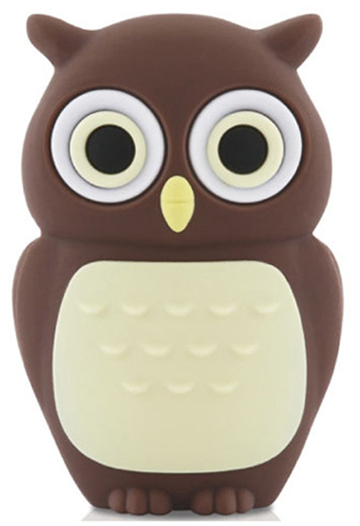

{% include JB/setup %}
<div class="about">
    <div class="aoubt_text" style="position: absolute; padding: 5px 0px 0px 96px">
        <p>该博客是关于Android的一些开发技术的记录笔记，真心希望能够给您带来一些帮助</p>
        <p>Email:zhqhzhqh@163.com</p>
        <p>QQ:31427701</p>
    </div>
    <div class="about_icon" style="position: relative; z-index: 1"  >
        
    </div>
</div>
<div>
    <br/>
    <h3>站内功能</h3>
</div>
<div>
    {% assign pages_list = site.pages %}
    {% include custom/waitabout_list %}
</div>


